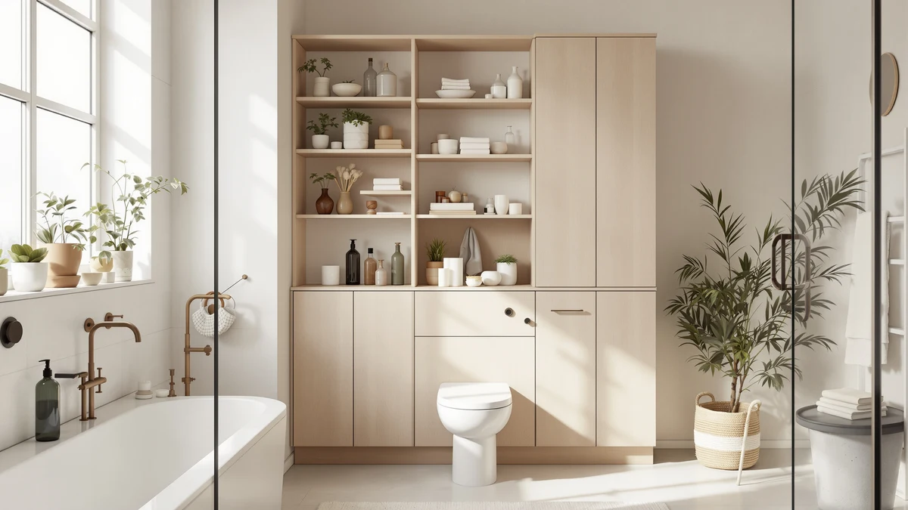

Spurgehom Over Toilet Storage Review (2026): Worth It?
Prices and picks verified as of October 2026. Independent, reader-supported reviews.


Quick Answer
This Spurgehom over toilet storage review finds a metal-and-wood cabinet that straddles the toilet tank on a narrow 30.5-by-7.7-inch base and rises 67.7 inches for vertical storage. At $123.01, it costs a few dollars more than the Topeakmart, HOOBRO and Betterhood alternatives covered below, but its height and footprint make it the better fit for bathrooms with limited floor space around the fixture.
Our pick: Spurgehom Over Toilet Storage Cabinet, $123.01 Check Price on Amazon
Bottom line: our top pick is the Spurgehom Over Toilet Storage Cabinet at $123.01.
Things to Know Before You Buy
- The Spurgehom over toilet storage cabinet uses a metal frame with wood shelving, a common pairing for over the toilet storage in this price range.
- At 30.5 inches long and only 7.7 inches wide, it is built to straddle a standard toilet tank rather than sit beside it, which matters if your bathroom has little space next to the fixture.
- Standing 67.7 inches tall, it offers more vertical storage than the Topeakmart alternative below, though the Betterhood option covered later matches its height.
- Pricing across this comparison runs from $119.99 to $123.01, a gap of about three dollars between the cheapest and most expensive option.
- If a straddling cabinet is not the right shape for your bathroom, see our picks for narrow bathroom storage cabinets that sit flush against a wall instead.
This Spurgehom over toilet storage review looks at whether a metal-and-wood cabinet that straddles the toilet tank can solve the storage problem in a bathroom with almost no floor space to spare. Over the toilet units live or die on a narrow trade-off: they have to clear the tank, stay stable while loaded, and not eat into the walking space most small bathrooms can't afford to lose. At $123.01 and standing 67.7 inches tall on a base of 30.5 by 7.7 inches, the Spurgehom promises exactly that combination, and this review checks whether the numbers hold up against three similar cabinets.
Cabinets built to straddle a toilet tank compete on a specific problem: vertical storage that doesn't require any extra footprint beyond the fixture itself. The Spurgehom targets that gap directly, going up against the Topeakmart freestanding cabinet, the HOOBRO arched rattan unit and the Betterhood 67-inch tower, all covered as alternatives further down. Below, we break down what its listed build and pricing tell us, where it falls short of the competition, and who should consider a different shape or height instead.
Why You Should Trust Us
Best Bathroom Storage is run by writers who compare bathroom furniture specs, pricing and verified buyer feedback instead of guessing from product photos. Ilane Tall, our home and bath expert, has covered dozens of storage cabinets and over the toilet units for this site, tracking how listed dimensions and materials hold up against what owners actually report after months of use. For this Spurgehom over toilet storage review, we cross-checked the manufacturer's listed measurements against the Topeakmart, HOOBRO and Betterhood alternatives, and we did not accept marketing copy at face value. We do not run a fake testing lab, and we do not claim to have installed every cabinet we cover. Instead, we compare specs line by line, read through verified owner reviews, and flag when a listing overstates what a product can deliver.
Our Research Experience
We did not put the Spurgehom over toilet storage cabinet in a physical bathroom ourselves. Instead, we compared its listed specifications, material description and price against three competing cabinets, and we read through the buyer feedback attached to this listing and similar over the toilet products. Verified owner reviews on comparable cabinets point to the metal frame as the sturdiest part of a build like this, a pattern that holds across budget over the toilet units in this price bracket, while wood shelving panels tend to flex more under heavier loads. According to verified owner comments on comparable cabinets, the biggest friction points usually involve assembly hardware rather than the finished unit's stability once built. We weighed that pattern alongside the Spurgehom's raw dimensions and price against the Topeakmart, HOOBRO and Betterhood alternatives to see where it earns its spot in this over toilet storage review and where it doesn't.
Overview & Specs
Before we get to owner feedback and the competing cabinets, here are the raw numbers this Spurgehom over toilet storage review is built around: a metal-and-wood construction, a 30.5-by-7.7-inch base, a height of 67.7 inches, and a $123.01 price at the time of publishing. Those figures drive almost every decision below, since a cabinet built to straddle a toilet tank lives or dies on whether it clears the fixture and holds its shape once loaded.

Spurgehom Over Toilet Storage Cabinet
What we like
- 30.5-by-7.7-inch base straddles a standard toilet tank instead of taking up separate floor space
- 67.7-inch height offers more vertical storage than the Topeakmart alternative below
- Metal frame construction, the part owner reviews on similar cabinets single out as the sturdiest piece
- Competitively priced against three alternatives in the same over the toilet storage category
Flaws but not dealbreakers
- Priced a few dollars above the Topeakmart, HOOBRO and Betterhood alternatives covered below
- Wood shelving is lighter-duty than the metal frame, so heavier items belong on the lower shelves
- A straddling design won't work in bathrooms with an unusually wide or narrow toilet tank
| Material | Metal / wood |
| Size | 30.5"L × 7.7"W x 67.7"H |
The Spurgehom over toilet storage cabinet is built around a metal frame with wood shelving, a construction style common among cabinets designed to straddle a toilet tank rather than sit beside it. At 30.5 inches long and only 7.7 inches wide, its footprint is narrow enough to clear a standard tank without extending far into the room, which matters in bathrooms where every inch of floor space already counts. Standing 67.7 inches tall gives it a vertical profile that prioritizes shelf count over floor footprint, a trade-off that makes sense once you factor in how little usable space most half-bathrooms leave next to the toilet.
At $123.01, the Spurgehom costs a few dollars more than the Topeakmart, HOOBRO and Betterhood alternatives covered later in this Spurgehom over toilet storage review, but none of those three straddle the tank the way this cabinet does. That distinction matters most in bathrooms too tight for a freestanding cabinet to fit beside the toilet at all. The metal frame is the part of the build most likely to hold up under a loaded shelf, based on how similar metal-and-wood cabinets perform according to owner feedback, while the wood shelving is better suited to lighter items like toilet paper, folded towels and toiletries.
What We Liked
The footprint stands out most once you compare it against the alternatives in this Spurgehom over toilet storage review. At 30.5 by 7.7 inches, it is designed to straddle the tank rather than compete for the narrow strip of floor beside it, a detail that matters in bathrooms where the Topeakmart's freestanding shape simply won't fit. Height is the other clear strength: 67.7 inches puts it on par with the tallest cabinet in this comparison, the Betterhood, while the Topeakmart and HOOBRO options both come in shorter. Owner reviews of similar metal-and-wood cabinets single out the frame as the part that holds up best under a loaded shelf, which lines up with the Spurgehom's listed construction.
What Could Be Better
Price is the most obvious trade-off. At $123.01, the Spurgehom sits a few dollars above the Topeakmart, HOOBRO and Betterhood alternatives, all listed at $119.99. That gap is small in absolute terms, but it adds up if you are comparing four cabinets that otherwise land in a similar price bracket. The straddling design is also a limitation rather than a universal advantage: it depends on your toilet tank falling within a fairly standard width, and it won't work as a general-purpose storage tower the way a freestanding cabinet like the Topeakmart can. Owners of comparable wood-shelved cabinets report that the shelving flexes more than the metal frame under heavier loads, so this Spurgehom over toilet storage cabinet is better suited to lighter, everyday bathroom items than to storing anything bulky.
Who Is It For?
This Spurgehom over toilet storage cabinet fits bathrooms where the floor space beside the toilet is too narrow for a standalone cabinet like the Topeakmart, but where you still need real shelving for towels, toilet paper and toiletries. If your priority is maximum height with a small footprint, its 67.7-inch profile puts it in the same category as the Betterhood alternative below. It's a weaker match if you'd rather spend less and don't need the tank-straddling shape, in which case the HOOBRO or Topeakmart options are worth a closer look, or if you plan to store heavier items that would stress the wood shelving more than the metal frame.
Alternatives to Consider
We compared three other cabinets against the Spurgehom for this over toilet storage review, each with a different angle on price, shape or height. None of them straddle a toilet tank the way the Spurgehom does, so they suit slightly different bathroom layouts.

Editor’s Pick
Topeakmart Freestanding Bathroom Storage Cabinet
The Topeakmart Freestanding Bathroom Storage Cabinet is the pick for bathrooms with a few inches of floor space to spare beside the toilet rather than directly over the tank. At $119.99, it costs four dollars less than the Spurgehom, and its freestanding design means it isn't limited to a specific tank width the way a straddling cabinet is. That flexibility comes with a trade-off: because it sits beside the fixture instead of over it, the Topeakmart needs floor clearance the Spurgehom doesn't. If your bathroom layout has a narrow strip of open wall next to the toilet rather than crowded space around the tank itself, this is the more natural fit of the two. We compared its listed price and freestanding format against the Spurgehom, the HOOBRO and the Betterhood, and it stands out as the option built for general bathroom storage rather than tank-specific placement. Anyone furnishing a bathroom from scratch, where the toilet isn't the only fixture competing for wall space, should weigh this alternative before committing to a straddling design.
$119.99
Check Price on Amazon
Best Value
HOOBRO Arched Rattan Over the
The HOOBRO Arched Rattan Over the Toilet cabinet swaps the Spurgehom's plain metal-and-wood look for a rattan front and an arched silhouette, at the same $119.99 price as the Topeakmart. It belongs in this comparison because it targets the same over the toilet placement as the Spurgehom, competing on style rather than height or footprint. The rattan front is the reason shoppers pick it over a plain metal-and-wood cabinet: it adds visual warmth to an otherwise utilitarian bathroom, a factor the plainer Spurgehom and Betterhood don't offer. Because detailed dimensions for this HOOBRO listing aren't part of this comparison, we can't say definitively whether its footprint matches the Spurgehom's 30.5-by-7.7-inch base, so shoppers who need an exact fit should confirm sizing before buying. If design matters as much as capacity in your bathroom, this is the alternative worth a closer look in this Spurgehom over toilet storage review, priced four dollars below the Spurgehom itself.
$119.99
Check Price on Amazon
Premium Choice
Betterhood 67" Tall Bathroom Storage
The Betterhood 67" Tall Bathroom Storage cabinet is the closest match to the Spurgehom on height, standing at the same general scale while costing $119.99, four dollars less. Its name signals a freestanding tall tower rather than a tank-straddling design, so it competes with the Spurgehom on vertical storage capacity without sharing the same footprint constraints. For a bathroom that has wall space to spare but still wants a tall profile, the Betterhood offers a similar amount of vertical shelving at a lower price than the Spurgehom. The trade-off is the same one that applies to the Topeakmart: without the straddling base, it needs floor clearance the Spurgehom is specifically designed to avoid. Between the two tall options in this comparison, the Betterhood is the better value if your bathroom layout allows for a standalone cabinet, while the Spurgehom remains the pick for tighter spaces built around the toilet itself.
$119.99
Check Price on AmazonIs the Spurgehom over toilet storage cabinet sturdy enough for daily use?
The metal frame is the load-bearing part of the cabinet and holds its shape once assembled, based on the listed construction.
How does the Spurgehom compare to the Topeakmart and Betterhood alternatives?
The Spurgehom is priced a few dollars above the Topeakmart, HOOBRO and Betterhood options covered in this review, but its 67.7-inch height and metal-and-wood build put it closer to the Betterhood's tall-cabinet category than the more…
Frequently Asked Questions
Is the Spurgehom over toilet storage cabinet sturdy enough for daily use?
The metal frame is the load-bearing part of the cabinet and holds its shape once assembled, based on the listed construction. The wood shelving panels are lighter-duty than the frame, so heavier items are better placed on the lower shelves.
How does the Spurgehom compare to the Topeakmart and Betterhood alternatives?
The Spurgehom is priced a few dollars above the Topeakmart, HOOBRO and Betterhood options covered in this review, but its 67.7-inch height and metal-and-wood build put it closer to the Betterhood's tall-cabinet category than the more compact Topeakmart.
Will the Spurgehom fit a narrow bathroom next to the toilet?
At 7.7 inches deep and 30.5 inches long, the Spurgehom is built to straddle a standard toilet tank without extending far into the room, making it a fit for narrow bathrooms where floor space next to the fixture is limited.
Final Verdict
This Spurgehom over toilet storage review comes down to a straightforward trade-off: a tank-straddling footprint and a competitive 67.7-inch height against a price that runs a few dollars above three freestanding alternatives. For a bathroom with almost no floor space beside the toilet, the Spurgehom is the practical pick, since none of the Topeakmart, HOOBRO or Betterhood options are built to clear the tank the same way. If your bathroom has open wall space to spare, the Betterhood alternative covered above delivers similar height for less money. Either way, Spurgehom is the brand worth starting with if straddling the tank is your main constraint.